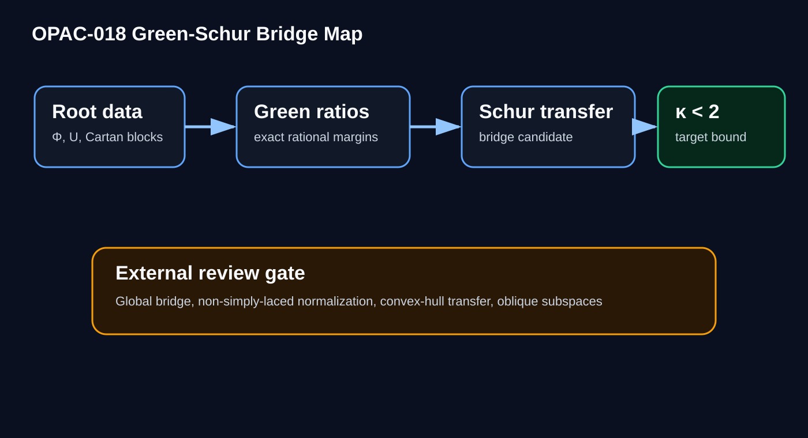
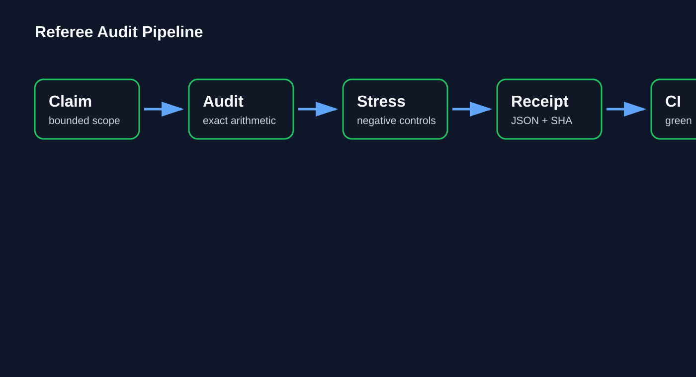
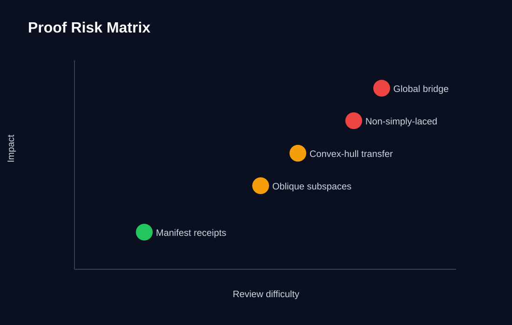

Claim boundary
The package studies kappa(Phi,U) < 2 through exact rational formulas and reviewable proof-candidate structure.
Exact audits
Python checks use rational arithmetic and integer cross-products. No proof-critical float comparisons.
Review status
This is not labeled journal accepted. External mathematical review remains pending.
Review entry points
- Start Review Here
- Dependency Table
- Literature Comparison
- Type A5 Worked Example
- Type C6 Worked Example
- Type D5 Worked Example
Bridge diagram

Audit pipeline

Risk matrix

Run the audit
python -m compileall -q . python pure_python_exact_audit.py python counterexample_stress_test.py python verify_all.py pytest -q python verify_manifest.py python build_sha_manifest.py --check